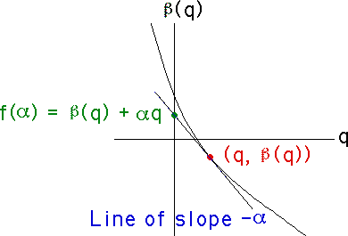

Multifractals
Defining f(α)
For each point
(q, β(q))
say the slope of the tangent line is
-α
. That is,
α = -dβ/dq.

This tangent line passes through the point
(q, β(q))
and the point
(0, y).
Consequently,
-α = (y - β(q))/(0 - q)
Solving for y,
y = q⋅α + β(q)
Call this y-value f(α):
f(α) = q⋅α + β(q)
Return to
Multifractals from IFS
.